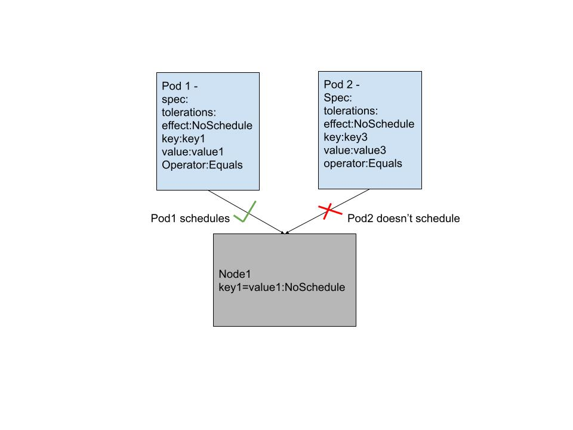

What are taints and tolerations?
Taints and tolerations is a Kuberenetes concept for advanced Pod scheduling. Taints are conditions that are applied on to the nodes such that no unwanted pod can be scheduled on them. The scheduler checks if the pods have tolerations that match the taint on the node, and will only then allow the pod to run on the node. Any pod without the matching taint will be repelled by the node.
- Apply taint on the node
- Add toleration to the podSpec of the pod
- effect, key and value fields are similar to the ones used in the taint command,
- operator can either be Equals or Exists. If the Equals operator is used then value must be specified, Exists operator doesn’t require the value field.
- tolerationSeconds field specifies the time in seconds that the pod will remain bound to a node after taint is applied
- Example Scenario
Taints are applied to the nodes in the format <key>=<value>:<effect>, for example to apply taint on a node node1
kubectl taint nodes node1 key1=value1:NoSchedule
The key and values are user defined strings and can take up any values, the taint effects supports 3 effects - NoSchedule, PreferNoSchedule and NoExecute.
The NoSchedule taint on the node doesn’t allow any pod to schedule on it without the matching toleration, the PreferNoSchedule is a soft version of NoSchedule in which the scheduler will try not to schedule a pod without a matching taint to run on the node. The NoExecute taint effect will evict any pod without the tolerations to run on the node.
Taints always work together with tolerations, tolerations are added in the podSpec and are necessary for pods to schedule, in the following example of a podSpec -
spec:
tolerations:
- effect: NoSchedule
key: key1
operator: Exists
effect: NoExecute
- key: key2
operator: Equals
value: value2
tolerationSeconds: 6000According to the following figure, Node1 is tainted with key key1 and value value1 with effect NoSchedule. The pod1 spec has a toleration that matches the taint exactly and hence schedules on the node, however Pod2 doesn’t have matching key value and fails to schedule on the pod.
Use cases of taints and tolerations
- Dedicated Nodes - When dedicates nodes are needed to be assigned to a set of users then the nodes can be tainted and labeled so that only pods from the particular team can use the nodes
- Nodes with special hardware - Nodes that make use of specialized hardware like GPUs can repel pods that do not make use of those machines, this helps schedule only the pods that need the hardware to run on these nodes
- Taint based evictions - The new kubernetes allow per-pod-eviction behavior when there are node problems
Use Case Example
As explained in the blog taints and tolerations enhance the use case by making sure that the infrastructure nodes repel any unwanted pods. So the users can specify only the subscription expempt workloads to schedule on these pods using specific taints on the nodes.